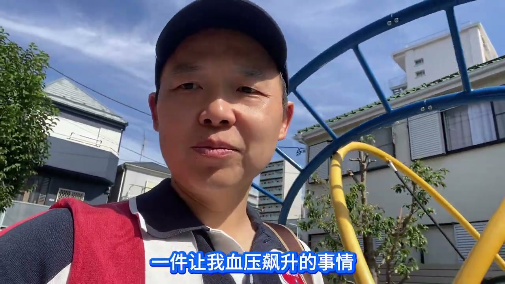
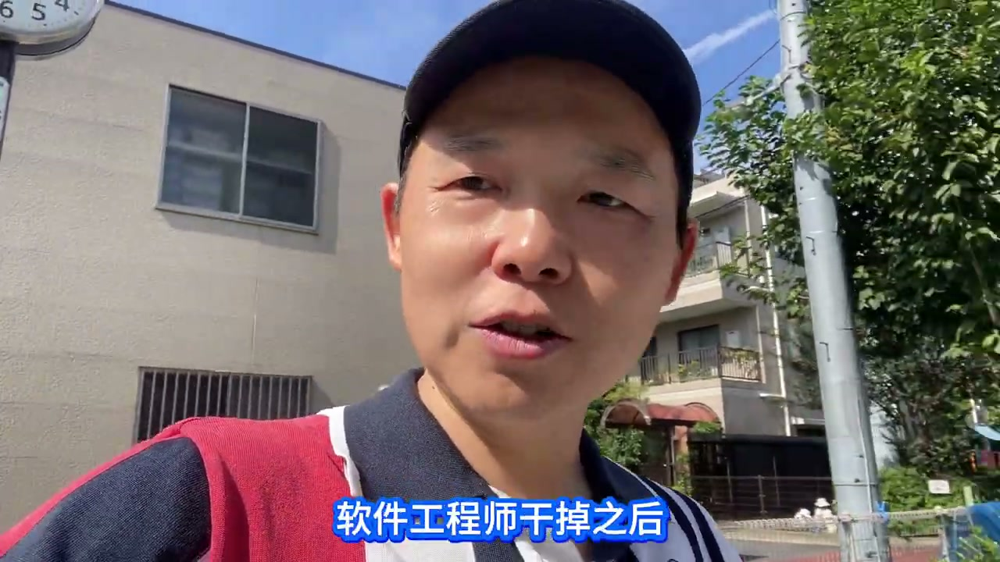

上周，我在东京的大学同学干了一件事，听完我血压直接飙升。

他是会社的技术总监。他想试试，能不能用三个agent，去替换掉他们会社的6个软件工程师。
先说结果：他在这个过程中碰到了两个问题，特别是最后一个，让他最终选择了放弃。
他用的是国产大模型，价格相对便宜，但是生产效率相对比较低，而且不太准。
有意思的是，完成前面80%的项目工作时，基本上不会比美国的这些大模型差多少。但是到了后面这20%的时候，差距就特别明显了——有些问题很难搞定，比如说故障的修改。
那换成美国的大模型呢？他算了一下，发现费用根本撑不住，消耗太高了。
第二个问题，是一个更为致命的问题。

他把底下这6个软件工程师干掉之后，就发现所有的agent都要和他交互，所有的责任全部集中在他一个人手上。
之前那6个人，能够分别去兜底一部分的功能和模块、或者是故障；他还可以去指挥指挥，去有一些情绪的宣泄，责任的归属也是分散的。但现在，就全归在他一个人头上。
他感觉非常的吃不消。所以最终，他还是选择了放弃。
所以最后的结论就是：在日本IT目前，用AI agent来替换这个中高级的技术者，这件事本身还不是太成熟、太靠谱。
所以我也暂时松了一口气，该吃吃，该喝喝。
虽然明知道那一天终将会到来，但是只要我们目前在这个圈子里、在这个环境里，在相应的工作中没有放弃AI的使用，并坚持应用它，那我相信，在今后的工作生活中，总有我们的一席之地。
拥抱AI，加油。